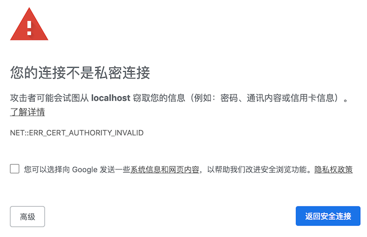
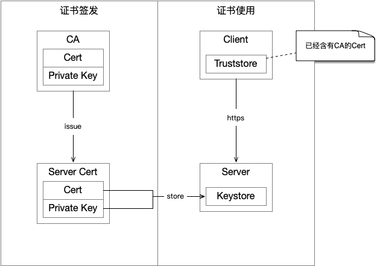
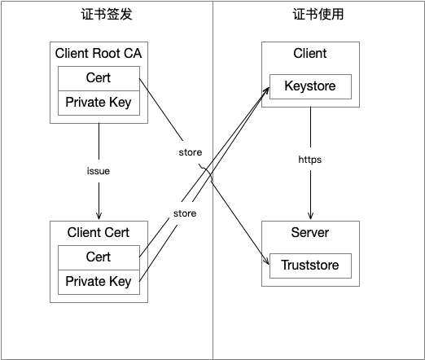

如何在Tomcat中做TLS客户端认证
常见的https网站做的是服务端认证（server authentication），浏览器通过证书判断你所访问的https://baidu.com是否真的是百度，而不是其他人伪造的网站。同时还对流量加密，防止别人窃听你的流量。
tls还可以做客户端认证（client authentication），即服务端判断客户端是否为其所信任的客户端。由此可见，客户端认证用于那些需要受控访问服务端。
在数据中心中，有些服务是非常敏感的，那么我们要做到：
- 客户端和我的流量是加密的，防止别人监听
- 客户端能够确认所访问的服务端的确是我们提供的服务端，而不是别人伪造的服务端
- 只有我信任的客户端可以访问我，防止恶意请求
所以很明显，前两个问题可以通过服务端认证解决，最后一个问题可以通过客户端认证解决。顺便一提，如果要使用客户端认证就必须使用服务端认证。
先来讲讲概念然后举个tomcat的例子讲讲怎么做。
概念
服务端认证
不论是做Server authentication还是Client authentication都需要证书。证书的来源有两种：
- 由权威CA签发，一般都是去购买。也可以使用let’s encrypt申请免费证书。
- 自己签发
在一切可能的情况下都应该使用权威CA签发的证书，为什么这么建议？因为这里牵涉到一个信任问题，浏览器、编程语言SDK和某些工具都维护了一个信任CA证书清单，只要是由这些CA签发的证书那就信任，否则就不信任。而这个链条是可以多级的，这里就不展开了。你只需要知道由信任CA签发的所有证书都是可信的。比如JDK自带的信任CA证书可以通过下面命令看到：
keytool -list -keystore $JAVA_HOME/jre/lib/security/cacerts
verisignclass2g2ca [jdk], 2016-8-25, trustedCertEntry,
证书指纹 (SHA1): B3:EA:C4:47:76:C9:C8:1C:EA:F2:9D:95:B6:CC:A0:08:1B:67:EC:9D
digicertassuredidg3 [jdk], 2016-8-25, trustedCertEntry,
证书指纹 (SHA1): F5:17:A2:4F:9A:48:C6:C9:F8:A2:00:26:9F:DC:0F:48:2C:AB:30:89
verisignuniversalrootca [jdk], 2016-8-25, trustedCertEntry,
...
让你输密码的时候输入changeit。
如果这个证书不是由信任CA签发的（比如自己签发）会发生什么？浏览器、编程语言SDK、你所使用的工具会报告以下错误：
curl：
curl: (60) SSL certificate problem: self signed certificate in certificate chain
Java：
Exception in thread "main" javax.net.ssl.SSLHandshakeException: sun.security.validator.ValidatorException: PKIX path building failed: sun.security.provider.certpath.SunCertPathBuilderException: unable to find valid certification path to requested target
at sun.security.ssl.Alerts.getSSLException(Alerts.java:192)
at sun.security.ssl.SSLSocketImpl.fatal(SSLSocketImpl.java:1964)
at sun.security.ssl.Handshaker.fatalSE(Handshaker.java:328)
at sun.security.ssl.Handshaker.fatalSE(Handshaker.java:322)
at sun.security.ssl.ClientHandshaker.serverCertificate(ClientHandshaker.java:1614)
...
浏览器：

这个错误实际上就是在告诉你这个证书不可信任，可能是一个伪造站点，让你小心点儿。如果这个证书由权威CA签发，那么就没有这个问题了。但是权威CA签发的证书要求申请人拥有域名，如果你这个服务是内部使用的没有域名，那就只能自己签发了。那么如何解决上面的问题呢？你得把自己签发的证书加入到信任CA证书清单里。
下图是权威CA签发证书的示例：

可以看到客户端有一个truststore，这个就是存放信任CA证书的地方，服务端有一个keystore，存放的自己的证书及对应的私钥。
下图是自签发证书的示例：

在上面可以看到我们自己成为了一个Root CA，把它放到客户端的truststore里。
客户端认证
前面讲过客户端认证是服务端来验证客户端是否可信的机制，其实做法和服务端认证类似只不过方向相反。客户端认证大多数情况下只能是自签发的（因为没有域名），虽然不是不可以从权威CA签发但是存在一些问题。下面解释为什么，假设权威CA是let’s encrypt，然后服务端信任它签发的所有证书。但是let’s encrypt是阿猫阿狗都可以申请的，现在有一个黑客申请了这个证书，然后请求你的服务端，服务端就认可了。
上面这个问题可以用这个方法解决：比如你用let’s encrypt申请了A证书，黑客用let’s encrypt申请了B证书，你的服务端的truststore只信任A证书，那么黑客用B证书访问你的时候就会被拒绝。但是这就带来另一个问题，比如你在开发的时候客户端证书有这么几套：生产用、调试用、开发用，那么每次客户端签发一个证书都要更新到你的服务器的truststore里，这也太麻烦了。
所以结合安全性和便利性，我们把自己变成Root CA，然后服务端信任它，这样一来服务端就可以在开发的时候把Client Root CA内置进去，大大减轻了维护truststore的工作量，看下图：

用Tomcat举个例子
下面举一个Tomcat做客户端认证的例子，因为是测试用，所以服务端认证也是用的自签发证书。
我们用了cfssl这个工具来生成证书。
服务端
先弄一套目录：
# 放自签发的服务端CA根证书
server-secrets/ca
# 放自签发的服务端的证书
server-secrets/cert
# 放服务端的keystore和truststore
server-secrets/jks
生成自签名CA证书
新建文件：server-secrets/ca/server-root-ca-csr.json
内容如下：
{
"key": {
"algo": "rsa",
"size": 2048
},
"names": [
{
"O": "Company",
"OU": "Datacenter",
"L": "Shanghai",
"ST": "Shanghai",
"C": "CN"
}
],
"CN": "server-root-ca"
}
运行下面命令生成Server ROOT CA证书：
cfssl gencert --initca=true ./server-root-ca-csr.json | cfssljson --bare server-root-ca
会得到下面几个文件：
server-secrets/ca/
├── server-root-ca-key.pem
├── server-root-ca.csr
└── server-root-ca.pem
用下面命令验证证书：
openssl x509 -in ./server-root-ca.pem -text -noout
Certificate:
Data:
Version: 3 (0x2)
Serial Number:
0c:8a:1a:ca:da:fa:4c:17:6c:1f:42:40:4c:f1:90:f4:fd:1d:fe:58
Signature Algorithm: sha256WithRSAEncryption
Issuer: C=CN, ST=Shanghai, L=Shanghai, O=Company, OU=Datacenter, CN=server-root-ca
Validity
Not Before: Mar 27 05:14:00 2019 GMT
Not After : Mar 25 05:14:00 2024 GMT
Subject: C=CN, ST=Shanghai, L=Shanghai, O=Company, OU=Datacenter, CN=server-root-ca
可以看到签发人和被签发人是同一个。
生成自签发证书
新建文件 server-secrets/cert/server-gencert.json，内容如下：
{
"signing": {
"default": {
"usages": [
"signing",
"key encipherment",
"server auth"
],
"expiry": "87600h"
}
}
}
可以看到我们会生成用来做server auth的证书。
新建文件 server-secrets/cert/demo-csr.json，内容如下：
{
"key": {
"algo": "rsa",
"size": 2048
},
"names": [
{
"O": "Company",
"OU": "Datacenter",
"L": "Shanghai",
"ST": "Shanghai",
"C": "CN"
}
],
"CN": "server-demo",
"hosts": [
"127.0.0.1",
"localhost"
]
}
看上面的hosts，你可以根据自己的需要填写域名或IP，这里因为是本地演示所以是127.0.0.1和localhost。
运行下面命令生成证书
cfssl gencert \
--ca ../ca/server-root-ca.pem \
--ca-key ../ca/server-root-ca-key.pem \
--config ./server-gencert.json \
./demo-csr.json | cfssljson --bare ./demo
得到文件：
server-secrets/cert/
├── demo-key.pem
├── demo.csr
└── demo.pem
验证结果：
openssl x509 -in ./demo.pem -text -noout
Certificate:
Data:
Version: 3 (0x2)
Serial Number:
1d:d0:51:97:6c:ce:ea:29:2a:f4:3b:3c:48:a3:69:b0:ef:f3:26:7b
Signature Algorithm: sha256WithRSAEncryption
Issuer: C=CN, ST=Shanghai, L=Shanghai, O=Company, OU=Datacenter, CN=server-root-ca
Validity
Not Before: Mar 27 05:17:00 2019 GMT
Not After : Mar 24 05:17:00 2029 GMT
Subject: C=CN, ST=Shanghai, L=Shanghai, O=Company, OU=Datacenter, CN=server-demo
可以看到签发者是server-root-ca，Subject是server-demo。
将证书导入keystore
到 server-secrets/jks，执行下面命令生成pkcs12格式的keystore（JDK识别这个格式）
openssl pkcs12 -export \
-in ../cert/demo.pem \
-inkey ../cert/demo-key.pem \
-out server-demo.keystore \
-name server-demo \
-CAfile ../ca/server-root-ca.pem \
-caname root -chain
过程中会让你输入密码，你就输入：server-demo-ks。
得到文件：
server-secrets/jks/
└── server-demo.keystore
用JDK提供的keytool看看里面的内容：
keytool -list -keystore server-demo.keystore
server-demo, 2019-3-27, PrivateKeyEntry,
证书指纹 (SHA1): B2:E5:46:63:BB:00:E7:82:48:A4:2F:EC:01:41:CE:B4:4B:CE:68:7A
让你输入密码的时候就输入：server-demo-ks。
客户端
先弄一套目录：
# 放自签发的客户端CA根证书
client-secrets/ca
# 放自签发的客户端的证书
client-secrets/cert
# 放客户端的keystore和truststore
client-secrets/jks
生成自签名CA证书
新建文件 client-secrets/ca/client-root-ca-csr.json：
{
"key": {
"algo": "rsa",
"size": 2048
},
"names": [
{
"O": "Company",
"OU": "Datacenter",
"L": "Shanghai",
"ST": "Shanghai",
"C": "CN"
}
],
"CN": "client-root-ca"
}
运行下面命令生成Client ROOT CA证书：
cfssl gencert --initca=true ./client-root-ca-csr.json | cfssljson --bare client-root-ca
会得到下面几个文件：
client-secrets/ca/
├── client-root-ca-key.pem
├── client-root-ca.csr
└── client-root-ca.pem
用下面命令验证证书：
openssl x509 -in ./client-root-ca.pem -text -noout
Certificate:
Data:
Version: 3 (0x2)
Serial Number:
7e:fc:f3:53:07:1a:17:ae:24:34:d5:1d:00:02:d6:e4:24:09:92:12
Signature Algorithm: sha256WithRSAEncryption
Issuer: C=CN, ST=Shanghai, L=Shanghai, O=Company, OU=Datacenter, CN=client-root-ca
Validity
Not Before: Mar 27 05:20:00 2019 GMT
Not After : Mar 25 05:20:00 2024 GMT
Subject: C=CN, ST=Shanghai, L=Shanghai, O=Company, OU=Datacenter, CN=client-root-ca
可以看到签发人和被签发人是同一个。
生成自签发证书
新建文件 client-secrets/cert/client-gencert.json，内容如下：
{
"signing": {
"default": {
"usages": [
"signing",
"key encipherment",
"client auth"
],
"expiry": "87600h"
}
}
}
可以看到我们会生成用来做client auth的证书。
新建文件 client-secrets/cert/demo-csr.json，内容如下：
{
"key": {
"algo": "rsa",
"size": 2048
},
"names": [
{
"O": "Company",
"OU": "Datacenter",
"L": "Shanghai",
"ST": "Shanghai",
"C": "CN"
}
],
"CN": "client-demo"
}
这里没有hosts，这是因为我们不需要用这个证书来做服务端认证。
运行下面命令生成证书
cfssl gencert \
--ca ../ca/client-root-ca.pem \
--ca-key ../ca/client-root-ca-key.pem \
--config ./client-gencert.json \
./demo-csr.json | cfssljson --bare ./demo
得到文件：
client-secrets/cert/
├── demo-key.pem
├── demo.csr
└── demo.pem
验证结果：
openssl x509 -in ./demo.pem -text -noout
Certificate:
Data:
Version: 3 (0x2)
Serial Number:
6e:50:e2:2c:02:bb:ef:fd:03:d9:2c:0a:8f:ba:90:65:fb:c4:b5:75
Signature Algorithm: sha256WithRSAEncryption
Issuer: C=CN, ST=Shanghai, L=Shanghai, O=Company, OU=Datacenter, CN=client-root-ca
Validity
Not Before: Mar 27 05:21:00 2019 GMT
Not After : Mar 24 05:21:00 2029 GMT
Subject: C=CN, ST=Shanghai, L=Shanghai, O=Company, OU=Datacenter, CN=client-demo
可以看到签发者是client-root-ca，Subject是client-demo。
将证书导入keystore
到 client-secrets/jks，执行下面命令生成pkcs12格式的keystore（JDK识别这个格式）
openssl pkcs12 -export \
-in ../cert/demo.pem \
-inkey ../cert/demo-key.pem \
-out client-demo.keystore \
-name client-demo \
-CAfile ../ca/client-root-ca.pem \
-caname root -chain
过程中会让你输入密码，你就输入：client-demo-ks。
得到文件：
client-secrets/jks/
└── client-demo.keystore
用JDK提供的keytool看看里面的内容：
keytool -list -keystore client-demo.keystore
client-demo, 2019-3-27, PrivateKeyEntry,
证书指纹 (SHA1): 83:AE:0E:5E:0C:CE:86:C9:D1:84:D7:6F:87:F3:76:1F:B4:3E:46:31
让你输入密码的时候就输入：client-demo-ks。
两端互信
好了，到此为止server和client的证书都已经生成了，接下来只需要将各自的root-ca添加到彼此都truststore中。
把server-root-ca导入到client的truststore中
cd client-secrets/jks
keytool -importcert \
-alias server-root-ca \
-storetype pkcs12 \
-keystore client.truststore \
-storepass client-ts \
-file ../../server-secrets/ca/server-root-ca.pem -noprompt
注意上面的-storepass参数，这个是trustore的密码：client-ts。
得到文件：
client-secrets/jks/
└── client.truststore
用JDK提供的keytool看看里面的内容：
keytool -list -keystore client.truststore
server-root-ca, 2019-3-27, trustedCertEntry,
证书指纹 (SHA1): 75:E3:78:97:85:B2:29:38:25:3C:FD:EC:68:97:9B:78:A0:5F:BB:9D
让你输入密码的时候就输入：client-ts。
把client-root-ca导入到server的truststore中
cd server-secrets/jks
keytool -importcert \
-alias client-root-ca \
-storetype pkcs12 \
-keystore server.truststore \
-storepass server-ts \
-file ../../client-secrets/ca/client-root-ca.pem -noprompt
注意上面的-storepass参数，这个是trustore的密码：server-ts。
得到文件：
server-secrets/jks/
└── server.truststore
用JDK提供的keytool看看里面的内容：
keytool -list -keystore server.truststore
client-root-ca, 2019-3-27, trustedCertEntry,
证书指纹 (SHA1): 1E:95:2C:12:AA:7E:6D:E7:74:F1:83:C2:B8:73:6F:EE:57:FB:CA:46
让你输入密码的时候就输入：server-ts。
配置Tomcat
好了，我们现在client和server都有了自己证书放在了自己的keystore中，而且把彼此的root-ca证书放到了自己的truststore里。现在我们弄一个tomcat作为server，然后为他配置SSL。
修改tomcat/conf/server.xml，添加如下Connector：
<Connector port="8443" protocol="org.apache.coyote.http11.Http11NioProtocol"
maxThreads="150" SSLEnabled="true">
<SSLHostConfig
certificateVerification="required"
truststoreFile="/path/to/server-secrets/jks/server.truststore"
truststorePassword="server-ts"
truststoreType="PKCS12">
<Certificate
certificateKeyAlias="server-demo"
certificateKeystoreFile="/path/to/server-secrets/demo-jks/server-demo.keystore"
certificateKeystoreType="PKCS12"
certificateKeystorePassword="server-demo-ks"
type="RSA" />
</SSLHostConfig>
</Connector>
可以看到我们开启了客户端认证certificateVerification="required"，也开启了服务端认证<Certificate>。记得修改上面的keystore和truststore的路径。
修改tomcat/conf/web.xml，添加如下元素：
<security-constraint>
<web-resource-collection>
<web-resource-name>Automatic Forward to HTTPS/SSL</web-resource-name>
<url-pattern>/*</url-pattern>
</web-resource-collection>
<user-data-constraint>
<transport-guarantee>CONFIDENTIAL</transport-guarantee>
</user-data-constraint>
</security-constraint>
这个作用是当访问8080端口时，都跳转到8443端口，强制走HTTPS。
启动tomcat：
tomcat/bin/catalina.sh run
用curl测试
好了，我们现在用curl来测试访问一下：
curl https://localhost:8443/
curl: (60) SSL certificate problem: self signed certificate in certificate chain
...
看到curl说服务端用的是一个自签发的证书，不可信，也就是说服务端认证失败。添加--insecure试试：
curl --insecure https://localhost:8443/
curl: (35) error:1401E412:SSL routines:CONNECT_CR_FINISHED:sslv3 alert bad certificate
这里就说明客户端认证失败。
所以如果要正确访问得像下面这样，指定server-root-ca证书，以及客户端自己签发的证书及private key：
curl --cacert server-secrets/ca/server-root-ca.pem \
--key client-secrets/cert/demo-key.pem \
--cert client-secrets/cert/demo.pem \
https://localhost:8443/
<!DOCTYPE html>
<html lang="en">
...
Httpclient测试
我们现在用Httpclient来访问看看。pom.xml中添加依赖：
<dependency>
<groupId>org.apache.httpcomponents</groupId>
<artifactId>httpclient</artifactId>
<version>4.5.7</version>
</dependency>
Java代码，记得把文件路径改掉：
import org.apache.http.HttpEntity;
import org.apache.http.HttpException;
import org.apache.http.client.methods.CloseableHttpResponse;
import org.apache.http.client.methods.HttpGet;
import org.apache.http.conn.ssl.SSLConnectionSocketFactory;
import org.apache.http.impl.client.CloseableHttpClient;
import org.apache.http.impl.client.HttpClients;
import org.apache.http.ssl.SSLContexts;
import org.apache.http.util.EntityUtils;
import javax.net.ssl.SSLContext;
import java.io.File;
import java.io.IOException;
public class Client {
public static void main(String[] args) throws Exception {
SSLContext sslcontext = SSLContexts.custom()
.loadTrustMaterial(
new File("/path/to/client-secrets/demo-jks/client.truststore"),
"client-ts".toCharArray()
)
.loadKeyMaterial(
new File("/path/to/client-secrets/demo-jks/client-demo.keystore"),
"client-demo-ks".toCharArray(),
"client-demo-ks".toCharArray())
.build();
SSLConnectionSocketFactory sslsf = new SSLConnectionSocketFactory(
sslcontext,
SSLConnectionSocketFactory.getDefaultHostnameVerifier());
CloseableHttpClient httpclient = HttpClients.custom()
.setSSLSocketFactory(sslsf)
.build();
HttpGet httpGet = new HttpGet("https://localhost:8443");
CloseableHttpResponse response = httpclient.execute(httpGet);
try {
System.out.println(response.getStatusLine());
HttpEntity entity = response.getEntity();
System.out.println(EntityUtils.toString(entity));
} finally {
response.close();
}
}
}
安全性考虑
- 所有private key都很重要！如果它被泄漏了，就要回收它所对应都证书。如果CA的private key泄漏了，那么用它签发的所有证书都要被回收。
- keystore和truststore的密码设置的要复杂一些。
关于反向代理
因为服务端认证所需要的证书直接配置在Tomcat上的，因此在做反向代理的时候不能使用SSL Termination模式，而是得使用SSL Passthrough模式。
其他语言、SDK、工具
上面讲的方法不是只适用于Tomcat和Httpclient的，TLS的服务端认证与客户端认证应该在绝大部分的语言、SDK、类库都有支持，请自行参阅文档实践。文中的keystore和truststore是Java特有的，不过不必迷惑，因为它们仅仅起到一个存放证书和private key的保险箱，有些语言或工具则是直接使用证书和private key，比如前面提到的curl。
参考资料
- cfssl
- SSL/TLS Configuration HOW-TO
- SSL Support
- CONFIGURING TOMCAT SSL CLIENT/SERVER AUTHENTICATION，这篇文章有点古老了，server.xml的配置方式已经不一样了，仅供参考。
- ClientCustomSSL.java
- JSSE Reference Guide
一些基础概念：
- Basics of Digital Certificates and Certificate Authority，基础概念，挺重要
- Create Your Own Certificate and CA，这篇文章挺重要的，主要讲了如何使用keytool和openssl来生成证书的过程
- Introducing TLS with Client Authentication
- The magic of TLS, X509 and mutual authentication explained
其他运用客户端认证的软件的相关文档，很有启发：